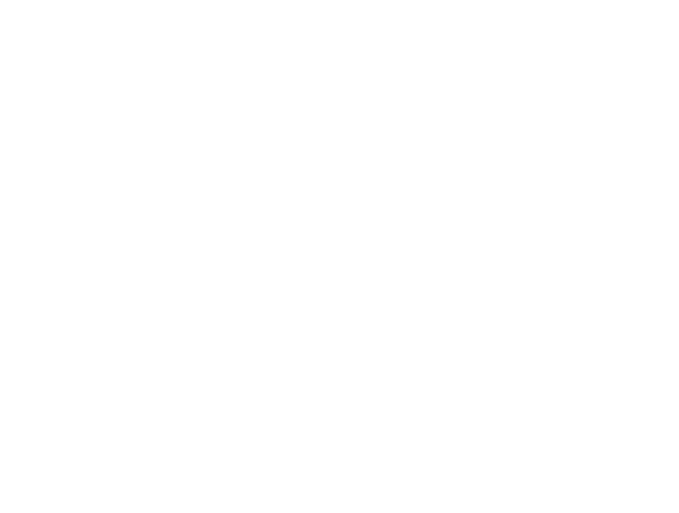
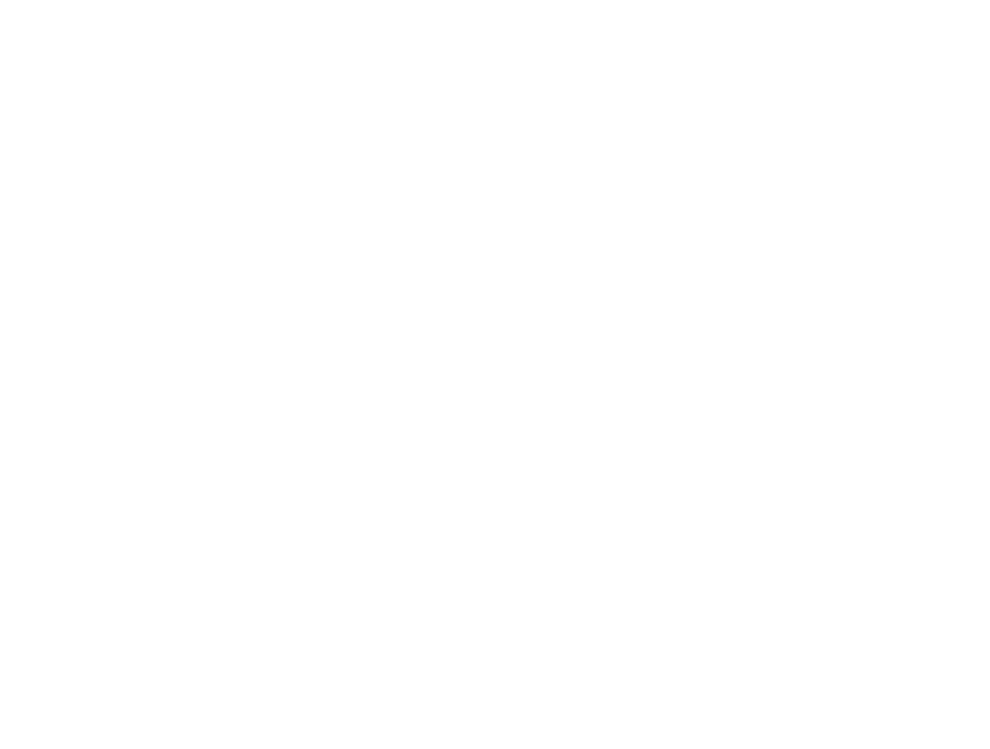

We explore how everyday lifestyle behaviors — sleep, exercise, diet, and screen time — relate to stress levels, happiness, and mental health conditions in a global survey of 3,000 individuals. As students ourselves, we are particularly interested in patterns among young adults and what lifestyle choices might support better mental well-being.
Explore visualizations ↓Our dataset was sourced from Kaggle and is a collection of global survey responses related to lifestyle habits and mental well-being. It contains 3,000 observations and 12 variables, with each row representing one individual's survey response. The data draws from international surveys and research studies examining factors associated with mental health, daily behaviors, and overall well-being. Since the dataset is observational, we focus on identifying patterns and correlations rather than establishing causation.
A bar chart showing the count of each reported mental health condition across all 3,000 respondents. This overview establishes the landscape of mental health in our dataset before exploring lifestyle correlations.
Box plots showing the distribution of nightly sleep hours across five dietary patterns: Balanced, Junk Food, Keto, Vegan, and Vegetarian. This examines whether dietary habits are reflected in sleep duration.

Box plots comparing sleep hours across three happiness level categories — Low (score 0–4), Medium (4–7), and High (7–10). This examines whether happier individuals tend to sleep more.

A three-panel Altair dashboard combining: happiness by stress level, exercise by happiness faceted by stress, and stress by happiness faceted by exercise. A shared dropdown filter links all three panels.
A jittered strip plot where each dot represents one woman in the dataset. Points are spread horizontally with jitter to reduce overlap and reveal the true density of happiness scores within each exercise group.
A side-by-side layout: a bar chart showing average happiness per stress level on the left, and a histogram of happiness score distributions filtered by exercise level on the right.
A heatmap showing average happiness at every combination of stress level and exercise level. Color intensity (viridis scale — darker = lower, lighter = higher) encodes the average happiness value, making interaction effects easy to spot at a glance.
A violin/density plot showing the full distribution shape of happiness scores for each stress level, filterable by exercise level. Unlike box plots, this reveals the entire shape and spread of each group's happiness distribution.
Our analysis of 3,000 global survey responses reveals consistent patterns about which lifestyle habits are most meaningfully associated with mental well-being. While no single factor determines happiness or mental health, physical activity stands out as the most robust and consistent predictor across all visualizations.
Across every visualization, higher exercise levels consistently correspond to higher happiness scores — regardless of stress level, diet, or other factors. This was the most robust pattern in the entire dataset.
Average happiness differed by less than 0.5 points across low, moderate, and high stress groups. How people manage stress — particularly through exercise — appears to matter more than the stress level itself.
Anxiety, PTSD, Depression, and Bipolar Disorder are nearly equally represented across all 3,000 respondents, suggesting these conditions cut across demographic and lifestyle groups rather than clustering in specific ones.
Higher happiness is associated with slightly more sleep, but the effect is small. Diet type shows minimal differences in sleep hours. These factors may play a supporting role rather than a primary one in mental well-being.
Since this dataset is observational, we cannot establish causation. Future work could use longitudinal data to track how changes in habits correspond to changes in well-being over time. It would also be valuable to include more granular measures — such as exercise type and intensity, sleep quality rather than just duration, and dietary quantity alongside type. Additionally, expanding analysis beyond women to compare all gender groups would strengthen the generalizability of these findings. Interventional studies targeting exercise as a low-cost, accessible mental health support strategy would be a particularly impactful next step.